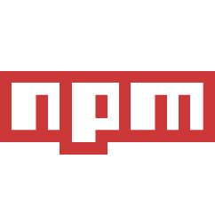
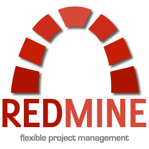

Javascript
I have over 5 years Javascript experience working on projects ranging from small website projects to
large scale web applications.
Currently I am working as a UI Developer on a team tasked with developing a fully responsive, highly performant
update to a high profile website within the Immediate Media portfolio.
jQuery
I have used jQuery over the past 5+ years and have great results in my projects however with frameworks such as AngularJS
offering an ecosystem of ready made modules I am finding that having to use basic jQuery is quickly
becoming a thing of the past. I also find that I uses very little jQuery functionality in my day to day work currently and think that I will soon
move away from relying on the full jQuery library and create my own lightweight library with basic DOM lookup functionality as that is my
main use of jQuery currently.
AngularJS
I have worked intensively with AngularJS in the past while developing web applications for industrial use cases
and I found it to be a fantastic solution for creating scalable applications in a modular way allowing for rapid future development.
Its granularity allows for non-intrusive updates throughout large applications which provides great
comfort in larger projects with multiple team members pushing frequent updates.
C++
I have 4+ years experience with C++ however in recent years I have been focusing on web development
and therefore have not been writing much C++ as before but concepts I learned while using C++ & C# such as OOP
(Object Orientated Programming) have really helped when developing complex web applications.
Grunt
I have been using the Grunt task runner with many node modules for combining tasks such as testing, minifying, uglifying compiling CSS (less / sass) and many more. Running Grunt
from the WebStorm IDE gives me a great overview on the state of my projects regarding coding standards,
test coverage and other interesting information.
Jasmine
I use Jasmine alongside Karma in grunt and find it very comfortable to use, I like its descriptive
BDD syntax and its easy integration through node.
Testing my AngularJS modules and directives is simple with Jasmine and using a TDD approach also forces
me to be more mindful during development to keep my code as granular and testable as possible.
Bootstrap
Bootstrap is a great framework that allows me to get feature rich UI elements into a project fast and without hassle.
The online documentation and examples make using bootstrap very user friendly. The style guidelines it
follows also helps during the design process as it uses widely understood and friendly UI features. Customising bootstrap
elements has also helped me with the development of my CSS skills.
Bower
Having used Bower for a short while I found it's useful mainly for developing small scale projects but because of its flat
structure when loading modules it does not scale well for large projects with multiple dependencies on different layers.
less
When developing Angular modules that are intended for re-use across multiple customer projects the ability to customize the styling used
for different customers becomes really important. Less has given me the ability to set up my styling in such a way that I only need to replace
the variable values in a single style guide file to get the desired styling across all of the project, this saves valuable time and allows for easy tweaking on request.

Node Packet Manager (NPM)
Node Packet Manager (NPM) is a great tool for managing the required plugins used in my projects, once it has been set up correctly
it allows me to gather all the resources i require in a single place and keep each resource version controlled, allowing me to continue
with development without having to spend extra time managing externally sourced resources.
jQueryUI
Having moved to developing in AngularJS I find that I have little use for jQuery UI as I can use Bootstrap-UI and since the "Angular"
way for developing recommends not accessing dom elements directly I feel that my whole approach to developing front end UI's has moved
away from jQuery's API however that being said I have over 5 years experience using jQuery and jQuery UI and can call on it if / when required.
Wijmo
Wijmo provides a whole suite of fantastic widgets offering users rich functionality and while working on projects in the past I have
harnessed some of this functionality to provide friendly UX for our end-users.

Redmine
Redmine is a great project management tool that I have found extremely helpful. It gives everybody involved in a project an overview
of the status of the project as a whole and allows management and developers to keep track of issues / bugs / new features / hours worked/
time taken to work on issues among a whole host of other features. Currently as I work remotely I find that redmine has given me a platform to
keep everyone involved in my progress and it helps provide transparency in my work which is very important to me while working remotely.
Visual Studio
During my role as web developer I have used many IDE's however more recently as I am developing using ASP.NET MVC I am developing
inside the VS 2013 IDE. VS contains a lot of functionality and although this does not affect the majority of the code I directly work on,
it does allow me to navigate the back-end code efficiently and gain an overview of the inheritence structure of the classes / controllers I use,
allowing me to gain a clear understanding of the code base as a whole.
Gimp
I use gimp whenever I need to create a mockup of a feature or a UI layout as I find that been able to show an image of what the
end-product will look like is very important when explaining to others what should happen. Also this can save time as design and layout
can be finalised before any code has been written.